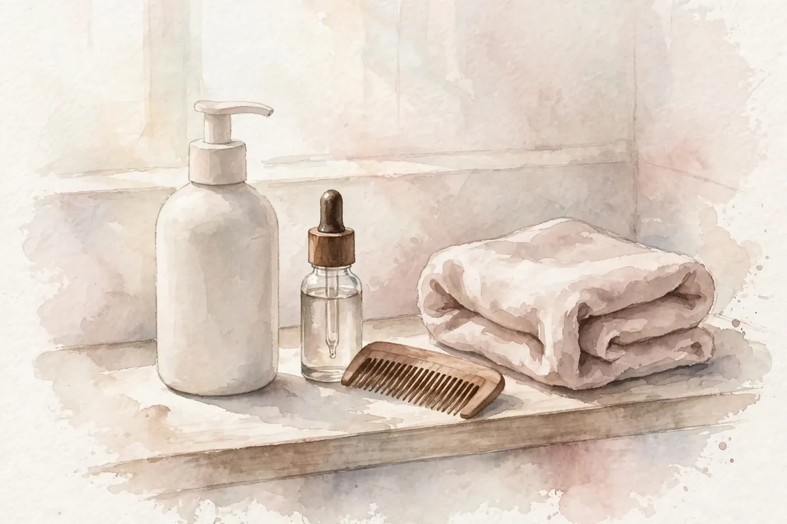
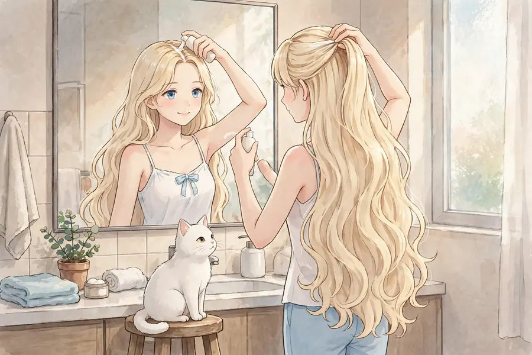

トップ ＞ ヘアケア ＞ 頭皮ローションの表示と使い方：つける場所と量の目安
頭皮ローションの表示と使い方：つける場所と量の目安

ヘッド施術をしていると、お客様から「頭皮ローションって、どうやって使うんですか」と聞かれることがあります。頭皮につけるタイプのローションで、シャンプーのあとや、朝の支度のときに使う人が多いアイテムです。この記事では、特定の商品の話ではなく、頭皮ローションの表示の読み方と、つける場所と量の目安を整理します。
まず押さえる、頭皮ローションの役割
頭皮ローションは、髪ではなく頭皮につけることを前提にしたローションです。シャンプーやトリートメントが髪を中心に使うものだとすれば、頭皮ローションは頭皮の表面に直接つける、という位置づけのアイテムです。容器の先が細くなっていて、分け目に沿って線を引くように出せるものや、スプレーで広くつけられるものなど、出し方の形もさまざまです。
使うタイミングは、シャンプーのあと、髪を乾かす前という案内が多いですが、朝の支度のときに使う人もいます。タイミングが商品によって違うのは、表示の案内に書かれています。まずはパッケージの「使い方」の欄を読んで、いつ、どこにつけるものなのかを確認するのが基本です。
頭皮ローションは、髪につけるアイテムと混同しやすいので、買うときに表示の「頭皮に」という言葉を確かめるのも大切です。髪用のローションと頭皮用のローションでは、つける場所が違います。表示の対象が「頭皮」なのか「髪」なのか、まずそこを見てください。
つける場所と、量の目安
頭皮ローションをつける場所は、頭皮全体ではなく、分け目に沿った線や、気になる部分を中心にするのが、現場での基本の考え方です。分け目をいくつか作って、その線に沿って少量ずつ出していくと、頭皮全体にまんべんなく行き渡りやすくなります。一か所にたくさん出すと、その部分だけが濡れた感じになり、髪の根元が重く見えることがあります。
量の目安は、パッケージに「1回あたり◯mL」「適量を」などと書かれていることがあります。数字が書かれていれば、まずその数字を目安にしてください。書かれていない場合は、分け目1本あたり、容器の先から数滴ずつ、という感覚で試してみるのがおすすめです。足りないと感じたら、もう1本の分け目に足す、という重ね方が、量の調整をしやすくします。
つけたあとは、指の腹で頭皮を軽く押さえるようにしてなじませます。爪を立ててこするのは避けて、指の腹で円を描くように、やさしく動かすのが基本です。なじませるときは、髪の毛をかき分けるようにして、ローションが頭皮に届いているかを手の感触で確かめます。強くこすらなくても、指の腹で押さえるだけで、頭皮の表面には広がります。
表示で見るポイントと、使うときの注意
表示で見るポイントは、使い方の案内と、内容量、そして「頭皮に」という対象の言葉です。あわせて、保管の案内も見ておきます。「直射日光を避けて保管する」「開封後の使用期限の目安」といった案内が書かれているものもあります。容器の先が細いタイプは、先が詰まらないよう、使ったあとに先を拭いておくのも、手入れのひとつです。
使うときの注意として、頭皮に傷や荒れがあるときは、使用をいったん控えるのが基本です。使い始めに違和感を覚えたときは、使用をやめて、気になる場合は皮膚科などの専門家に相談してください。この記事は使い方の目安の案内であり、商品ごとに表示がある場合は、そちらが優先です。
頭皮ローションは、つける場所と量の目安を押さえておくと、毎日の使い方が安定します。分け目に沿って少量ずつ、指の腹で軽くなじませる、という流れを、まず一度試してみてください。

セラフィナ「頭皮ローションは髪じゃなくて頭皮につけるものなんだね。分け目に沿って、少しずつがコツだよ」